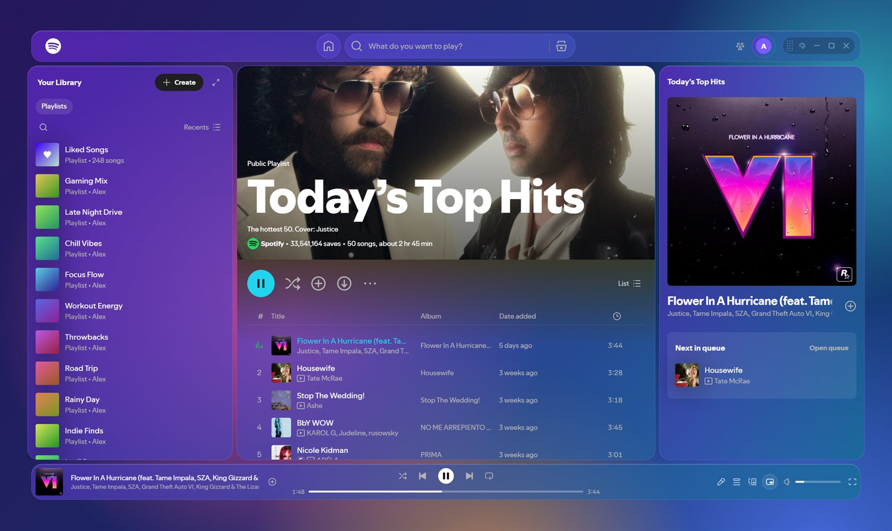
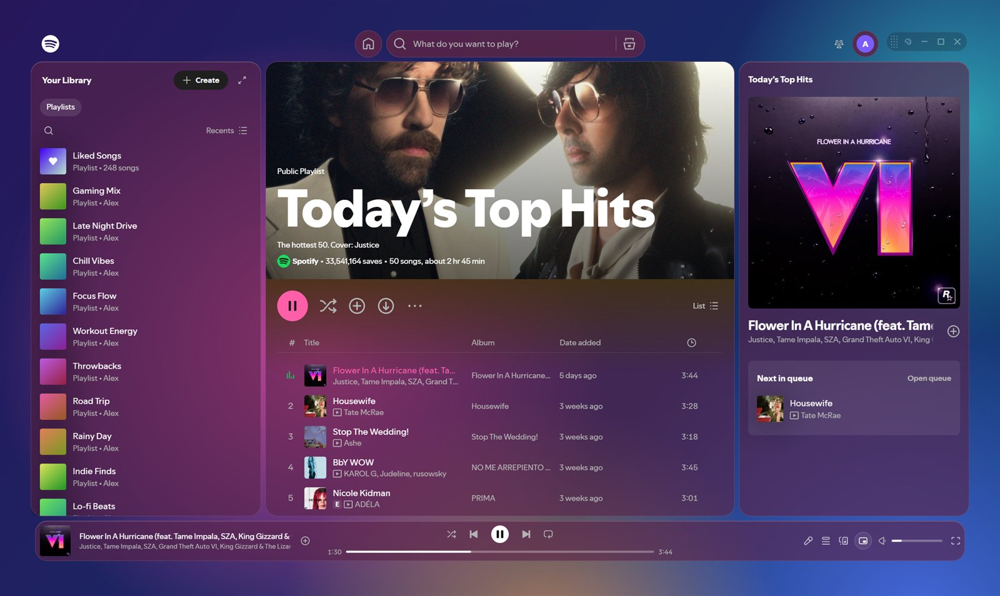
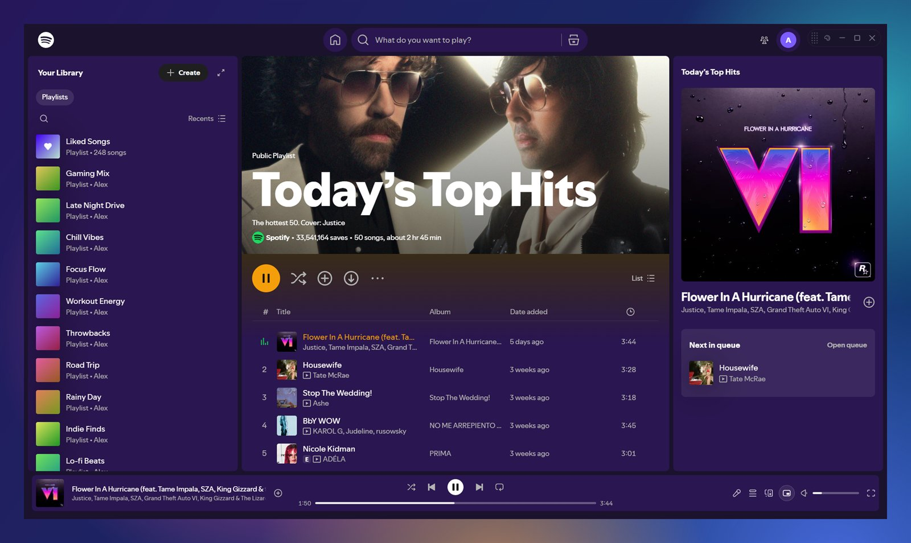
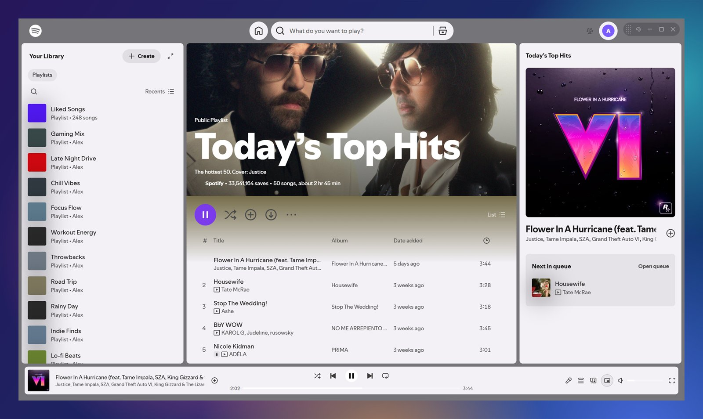
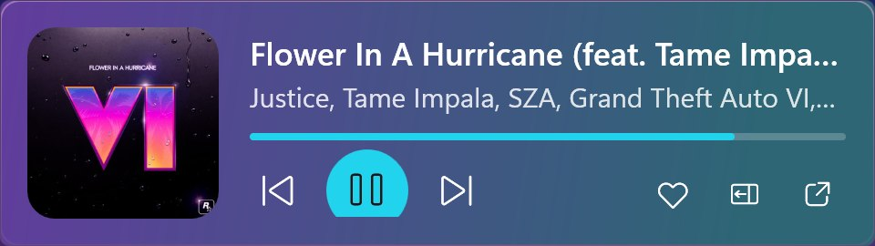
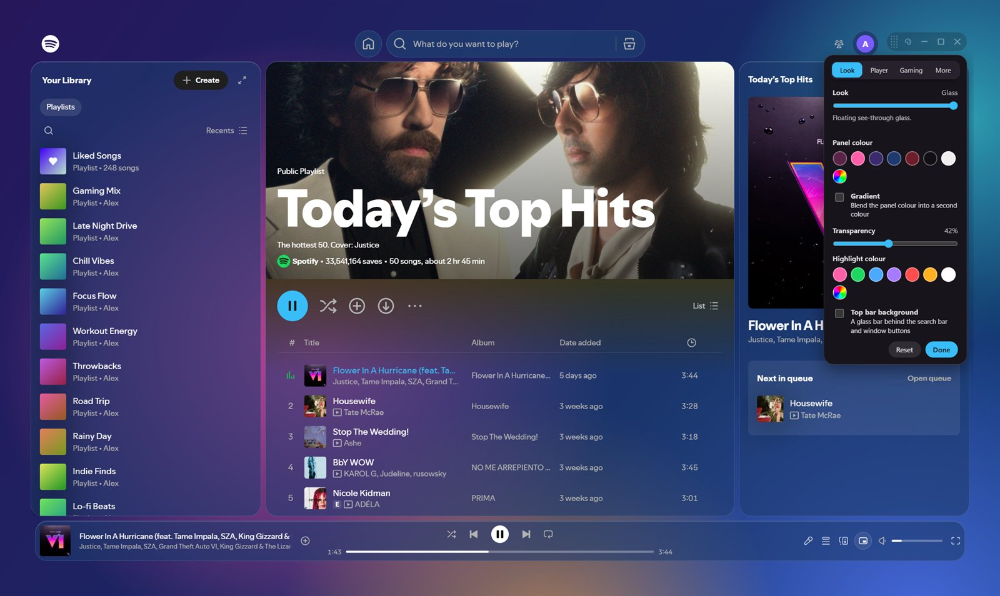
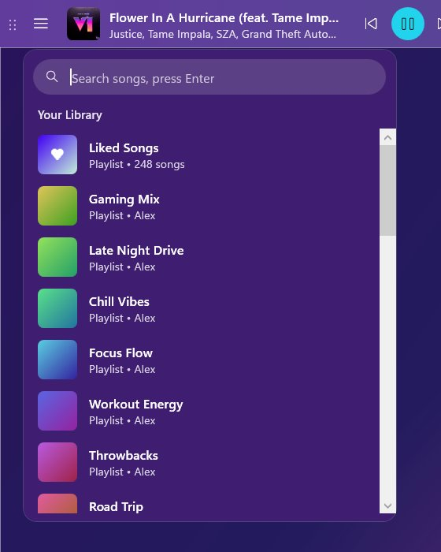
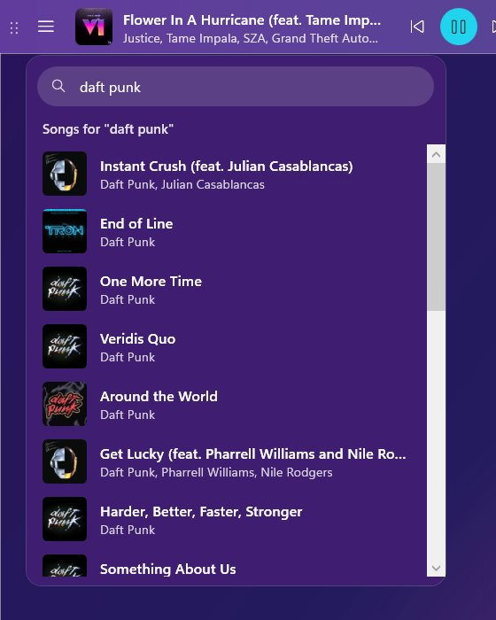
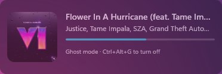

A light, floating player for Spotify on Windows. Your music in a see-through window, a mini player or a bar on the edge of your screen, and out of the way the moment you start a game.
Unofficial · needs Spotify Premium · updates itself
One gradient flows across the whole window, the search box, the mini player and the bar.





Pick any panel colour, or blend two into a gradient at any angle with a balance slider. Set how see-through the glass is, choose your own highlight instead of Spotify green, and float a glass bar behind the search box. Light colours automatically get dark text, so it always stays readable.

Shrink Glassify into a small card that floats on top, or dock it as a bar on any edge of any screen. Windows make room for the bar like they do for the taskbar. Ctrl+Alt+B switches between them.


The bar: the song, a timeline with the like button, next in queue and your recently played playlists.
The moment a fullscreen game opens, Glassify hides its window, keeps only the player and drops to low priority so your game gets the computer. Close the game and everything comes back.

Clicks go straight through to your gameGlassify runs Spotify's own web player in a minimal shell. When you're not looking at it, it lowers its priority and saves memory.
Measured on our test PC; your numbers will vary.
These are the same four tabs you'll find behind the gear in Glassify.
Glassify.exe and sign in to Spotify. If Windows says it protected your PC, choose More info, then Run anyway.Needs Windows 10 or 11 and Spotify Premium. The Edge WebView2 runtime comes with Windows 11.
Free and open source. If you like it, a star on GitHub helps other people find it.